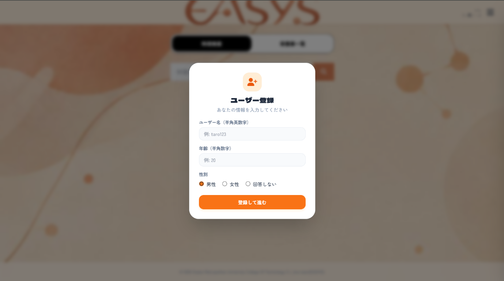
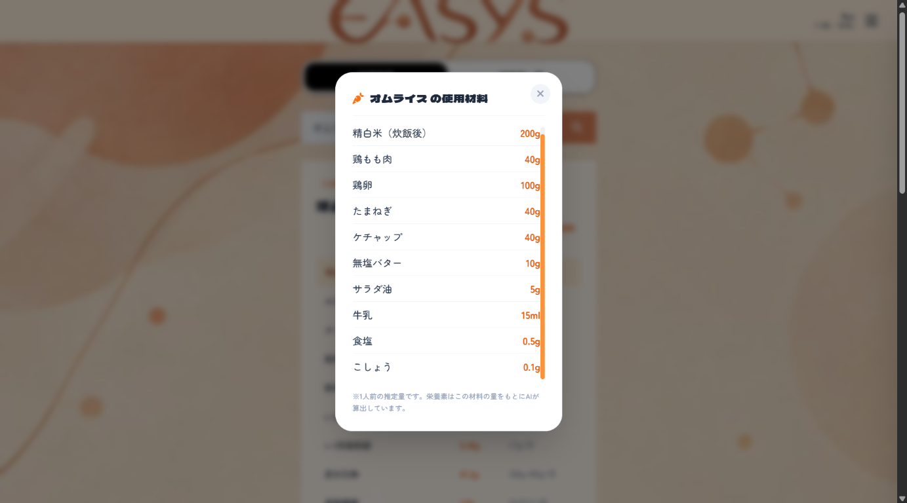
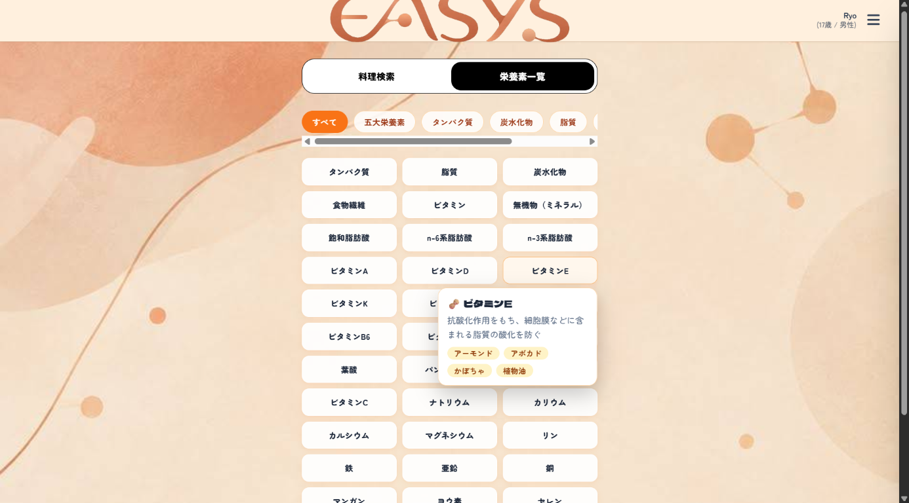

01
食べた料理を入力
食べた料理を入力すると、AIが摂取した栄養素を分析します。
PROJECT / 001 — WEB APP
食べた料理から摂取した栄養素をAIで分析し、年齢や性別に応じて不足している栄養素をひと目で確認できるアプリです。
01 / BACKGROUND
学校でのハッカソンをきっかけに、忙しい毎日の中でも食事の栄養を把握しやすくするアプリを企画しました。
02 / FOR
一人暮らしの人や、家事・仕事などで忙しく、栄養バランスを考える時間を取りにくい人を想定しています。
03 / FEATURES
01
食べた料理を入力すると、AIが摂取した栄養素を分析します。
02
年齢や性別に応じて、摂取した栄養素と不足している栄養素を確認できます。
03
できるだけ多くの種類の栄養素を一覧で見られるようにしています。
04 / SCREENS




05 / DESIGN
できるだけ多くの種類の栄養素を表示し、食事の状態をひと目で理解できる画面を目指しました。デザインにも力を入れ、必要な情報を見つけやすくすることを意識しました。
06 / CHALLENGE
AIをアプリに取り入れることに挑戦しました。利用に制限があるため、今後も試行錯誤しながら改善していきたいです。
07 / LEARNING
一つのアプリを作り上げるには、想像していた以上に多くのことを考える必要があると実感しました。